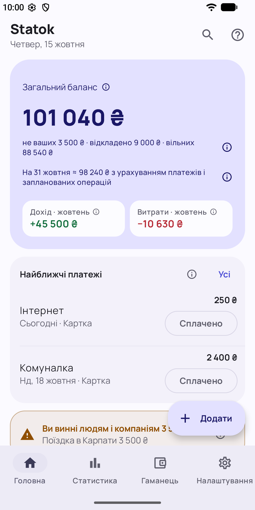
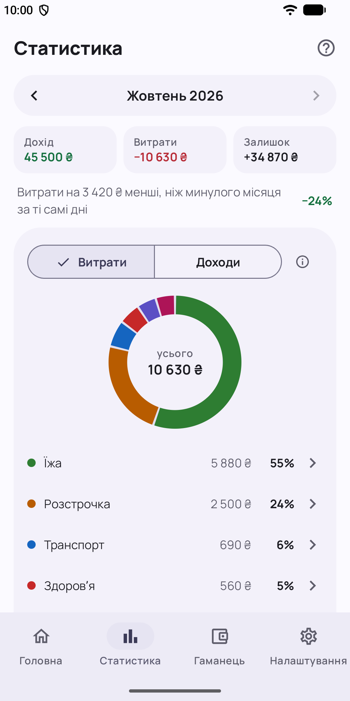
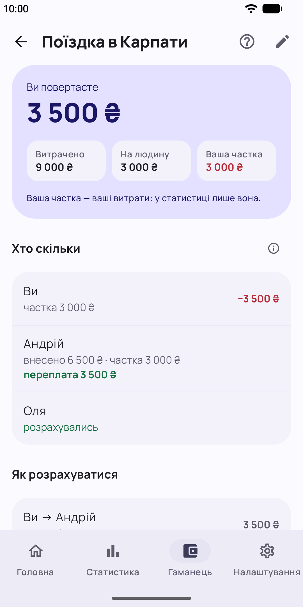
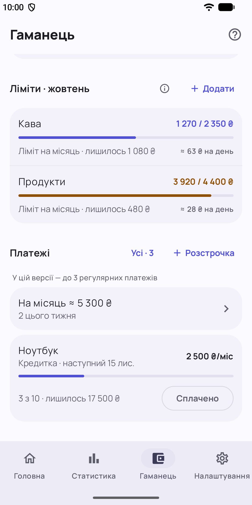

Statok — облік грошей
Витрати, ліміти, платежі й чужі гроші окремо. Офлайн, без реклами й акаунта.
Що вміє
- Витрата за кілька секунд: сума, тег, готово. Є віджет на головному екрані, плитка у швидких налаштуваннях і ярлик на іконці.
- Місячні ліміти для тегів: скільки лишилось і чи є перевитрата. Місяць може починатися з будь-якого дня, наприклад з 25-го, коли приходить зарплата.
- Чужі гроші окремо: гроші компанії, рідних чи друзів ведуться в окремому бюджеті. Видно, скільки грошей на картці не ваших і хто кому винен.
- Регулярні платежі з нагадуваннями; кнопка «Сплачено» є прямо у сповіщенні.
- Розстрочки на кредитній картці: графік, залишок і останній платіж.
- Статистика місяця: дохід, витрати й залишок, розподіл витрат за тегами.
- Пошук по всій історії, замок PIN-кодом чи біометрією, резервна копія у файл, експорт у CSV, темна тема.




Приватність
Усі дані зберігаються лише на вашому телефоні. Акаунта немає, реклами немає, застосунок не має доступу до інтернету й не збирає жодних даних. Облік ведеться в гривні.
Скоро в Google Play
Застосунок зараз проходить тестування. Незабаром він з’явиться в Google Play.
Про розробника і контакти
Розробник: ФОП Сандул Олександр Сергійович (фізична особа – підприємець), Вінниця, Україна.
Email: sandul.dev@gmail.com